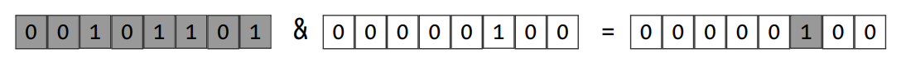
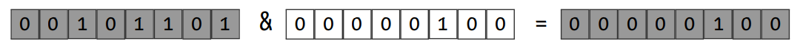
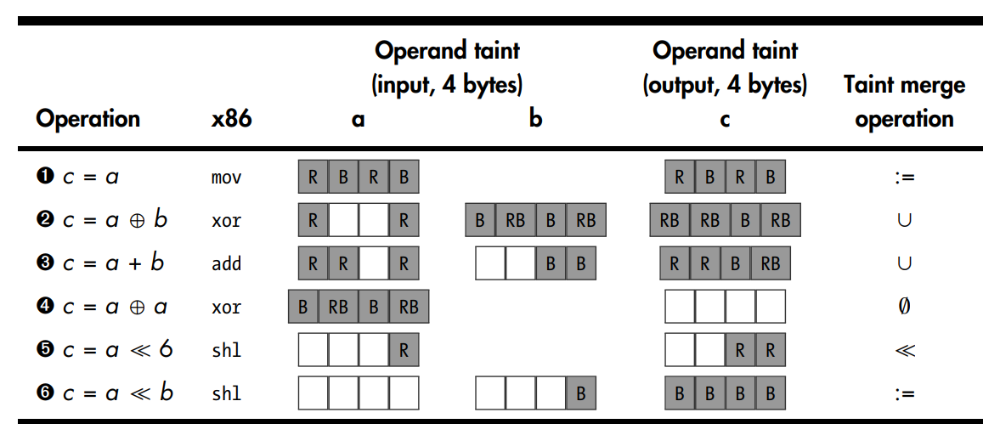
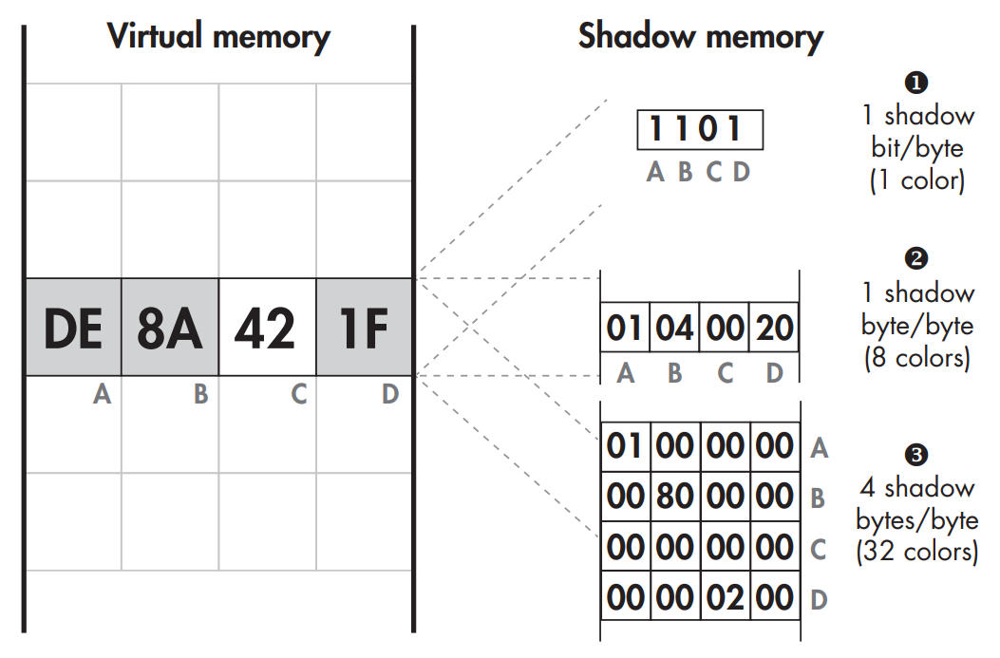

8 minutes
Taint Analysis
Taint Analysis is a program analysis technique that allows you to determine the influence that a selected program state has on other parts of the program state. Taint any data that a program receives from the network, track that data, and raise an alert if it affects the program counter. If an operation uses the value of some tainted object, say X, to derive a value for another, say Y, then object Y becomes tainted. Object X tainted the object Y. Taint Analysis can be classified into two types.
Static Taint Analysis
The advantage of using static analysis is the fact that it provides better code coverage than dynamic analysis. On the other hand, the principal disadvantage of the static analysis is that it’s not as accurate than the dynamic analysis - It cannot access the runtime information for example. We can’t retrieve registers or memory values.
Dynamic Taint Analysis
DTA (Dynamic Taint Analysis), also called DFT (Data Flow Tracking), Taint Tracking,
- Indicate a control-flow hijacking attack.
- Implemented on top of a dynamic binary instrumentation platform.
- Taint analysis on static instrumentation require inserting the necessary taint analysis logic at compile time rather than at runtime. Usually results in better performance but requires source code.
- DTA instruments all instructions that handle data to track data flow, either in registers or in memory. In practice, this includes nearly all instructions, which means that DTA leads to very high performance overhead on instrumented programs.
- DTA only for offline analysis of programs since slowdowns of 10x are expected. While a 10x overhead may be acceptable during security tests of a web server, for instance, it usually isn’t okay in production.
Steps
Taint Sources
Program locations where the data that’s interesting to track is selected, like system calls. Data is tainted using API calls, which take a register or memory address to mark as tainted as the input. These API calls are provided by the DTA library being used.
For example,
- Track any data that comes in from the network to see whether it exhibits any behavior that could indicate an attack. Instrument network-related system calls like recv or recvfrom with a callback function that’s called by the dynamic instrumentation platform whenever these system calls occur. In that callback function, you loop over all the received bytes and mark them as tainted. So, the recv and recvfrom functions are your taint sources.
- While tracking data read from file, system calls such as read are the taint sources.
- Tracking numbers that are the product of two other numbers, the output operands of multiplication instructions can be tainted, which are then the taint sources.
Taint Sinks
Program locations checked to see whether they can be influenced by tainted data. When taint is detected at a taint sink, some response is triggered, such as raising an alert. DTA libraries provide functions to check whether a register or memory location is tainted.
For example, to detect control-flow hijacking attacks, indirect calls, indirect jumps, and return instructions are instrumented with callbacks that check whether the targets of these instructions are influenced by tainted data. These instrumented instructions are taint sinks.
Tracking Taint Propagation
All instructions handling data are instrumented to track tainted data’s flow. The instrumentation code determines propagation of taint from the input operands of an instruction to its output operands. For example, if the input operand of a mov is tainted, the instrumentation code will mark the output operand as tainted as well, since it’s clearly influenced by the input operand. In this way, tainted data may eventually propagate all the way from a taint source to a taint sink. Tracking taint is a complicated process because determining which parts of an output operand to taint isn’t always trivial. Taint propagation is subject to a taint policy that specifies the taint relationship between input and output operands. There are different taint policies that can be used depending on the needs. Taint propagation is typically handled by a dedicated DTA library, such as libdft.
##DTA Design Factors
There are multiple factors that determine the balance between the performance and versatility of the system.
Taint Granularity
The unit of information by which a DTA system tracks taint. An important factor influencing its accuracy.
For example, taking white bytes as untainted and grey ones as tainted,
 Bit-Granularity.
All the bits in the first operand are tainted, while no bits are tainted in the second operand. Since this is a bitwise AND operation, if an attacker controls only the first input operand, then the only bit positions in the output that they can affect are those where the second operand has a 1. All other output bits will always be set to 0. Thus, only that one output bit is tainted.
 Byte-Granularity.
Byte-Granularity DTA system can’t consider each bit individually, the whole output is marked as tainted. The system simply sees a tainted input byte and a nonzero second operand and therefore concludes that an attacker could affect the output operand.
Taint Colors
Using multiple taint colors to apply a different color to each taint source so that when taint reaches a sink, the source affecting that sink can be distinguished.
It may seem possible to store 255 different colors in 1 byte of taint information since a byte can store 255 distinct nonzero values. However, that approach doesn’t allow for different colors to mix. Without the ability to mix colors, distinguishing between taint flows when two taint flows run together is impossible: if a value is affected by two different taint sources, each with their own color, it’s not possible to record both colors in the affected value’s taint information. To support mixing colors, a dedicated bit per taint color is required. For instance, for 1 byte of taint information, the colors 0x01, 0x02, 0x04, 0x08, 0x10, 0x20, 0x40, and 0x80 can be supported. Then, if a particular value is tainted by both the colors 0x01 and 0x02, the combined taint information for this value is 0x03, which is the bitwise OR of the two colors.
Taint Propagation Policies
The taint policy of a DTA system describes how the system propagates taint and how it merges taint colors if multiple taint flows run together.
 Taint Propagation Examples for a Byte-Granularity DTA System with Two Colors, Red (R) and Blue (B).
Overtainting and Undertainting
Undertainting occurs when a value isn’t tainted even though it “should be,” which means that an attacker can get away with influencing that value without being noticed.
Overtainting means that values end up tainted even though they “shouldn’t be.” This results in false positives, such as alerts when there is no actual attack in progress.
They can be a result of the taint policy or the way control dependencies are handled.
Control Dependencies
var = 0;
while(cond--) var++;
An attacker who controls the loop condition cond can determine the value of var. This is called a control dependency. While the attacker can control var through cond, there’s no explicit data flow between the two variables.
Shadow Memory
Region of virtual memory allocated by the DTA system to keep track of the taint status of the rest of the memory. Typically, DTA systems also allocate a special structure in memory where they keep track of taint information for CPU registers. The structure of the shadow memory differs depending on the taint granularity and how many taint colors are supported.
 Shadow memory with byte-granularity and 1, 8, or 32 colors per byte.
Bitmap-Based Shadow Memory
Bitmap ➊ stores a single bit of taint information per byte of virtual memory, so it can represent only one color: each byte of memory is either tainted or untainted. Bytes A–D are represented by the bits 1101, meaning that bytes A, B, and D are tainted, while byte C is not.
Multicolor Shadow Memory
➋ supports eight colors and uses 1 byte of shadow memory per byte of virtual memory. Again, bytes A, B, and D are tainted (with colors 0x01, 0x04, and 0x20, respectively), while byte C is untainted. To store taint for every virtual memory byte in a process, an unoptimized eight-color shadow memory must be as large as that process’s entire virtual memory space. The final shadow memory type supports 32 colors ➌. Bytes A, B, and D are tainted with the colors 0x01000000, 0x00800000, and 0x00000200, respectively, while byte C is untainted. This requires 4 bytes of shadow memory per memory byte, which is quite a hefty memory overhead.
There’s usually no need to store shadow bytes for the memory area where the shadow memory itself is allocated, so omit shadow bytes for that memory area. Even so, without further optimizations, the shadow memory still requires half of the virtual memory. This can be reduced further by dynamically allocating shadow memory only for the parts of virtual memory that are actually in use (on the stack or heap), at the cost of some extra runtime overhead. Moreover, virtual memory pages that are not writable can never be tainted, all of those to the same “zeroed-out” shadow memory page can be safely mapped. With these optimizations, multicolor DTA becomes manageable, though it still requires a lot of memory.
Citation: Practical Binary Analysis.